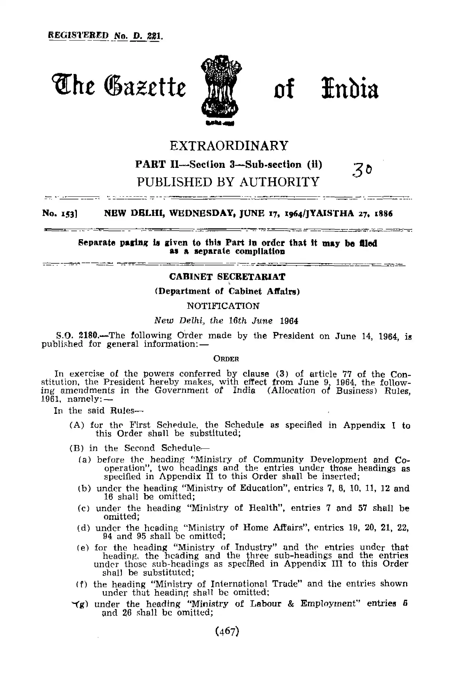
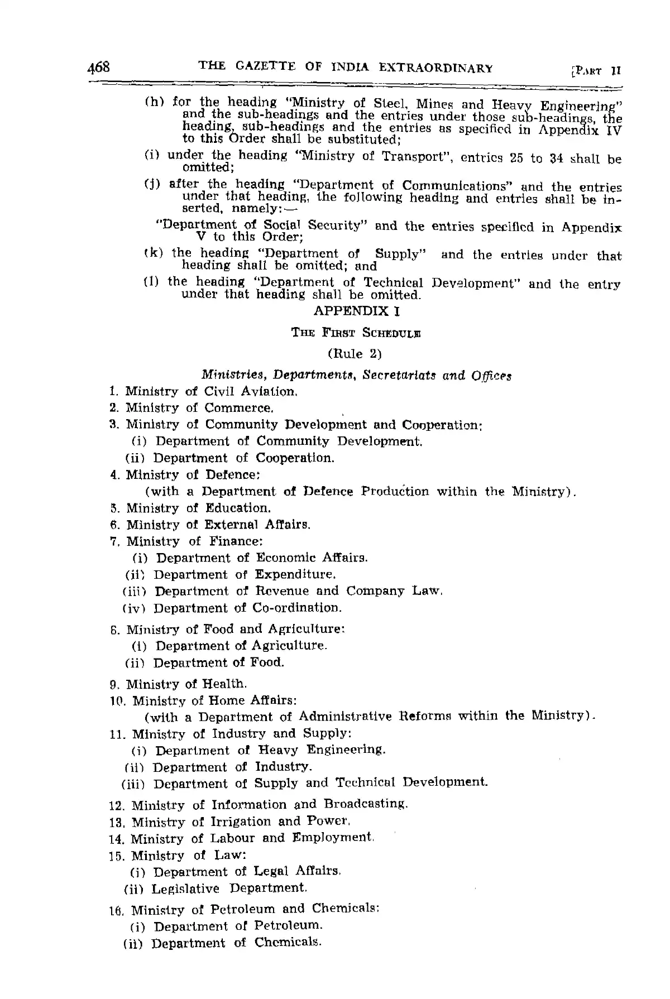
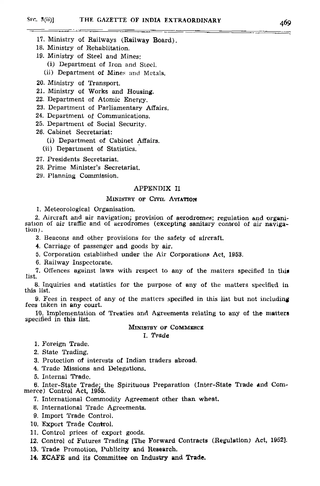
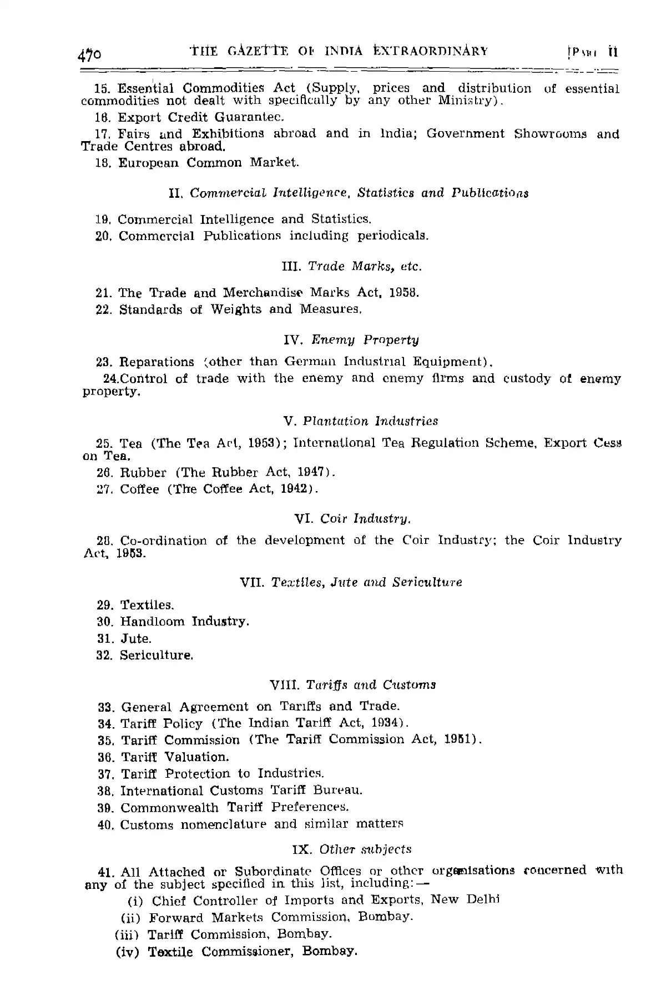
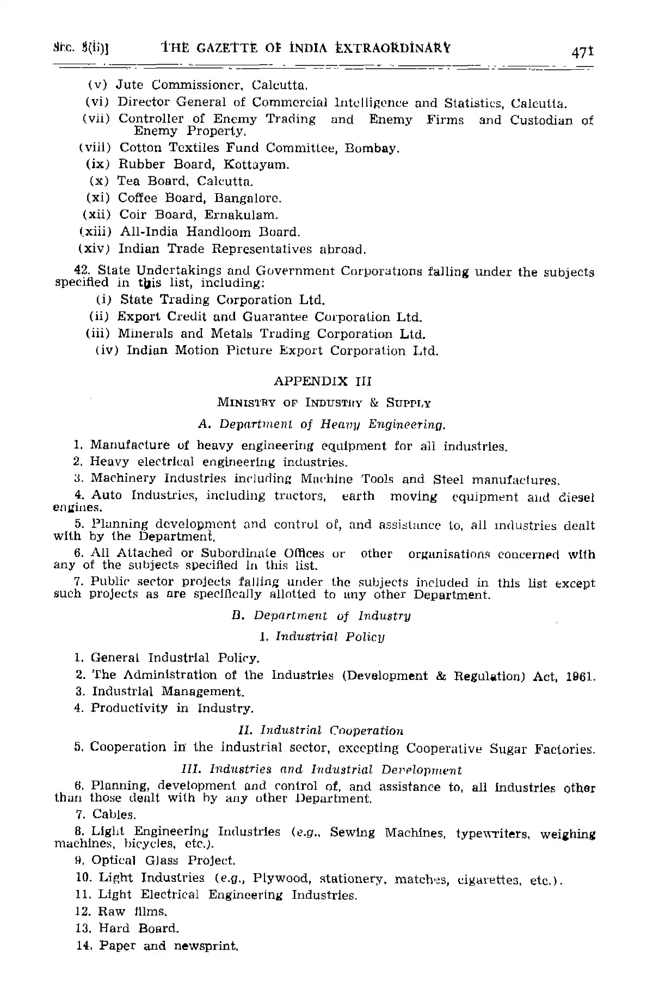
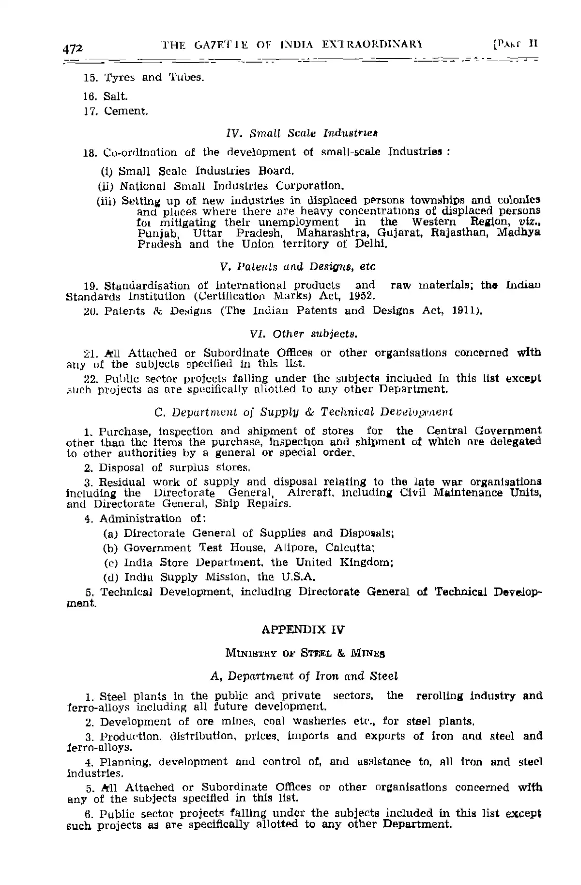
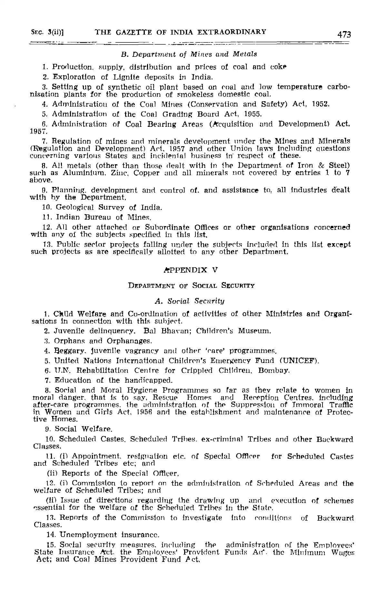
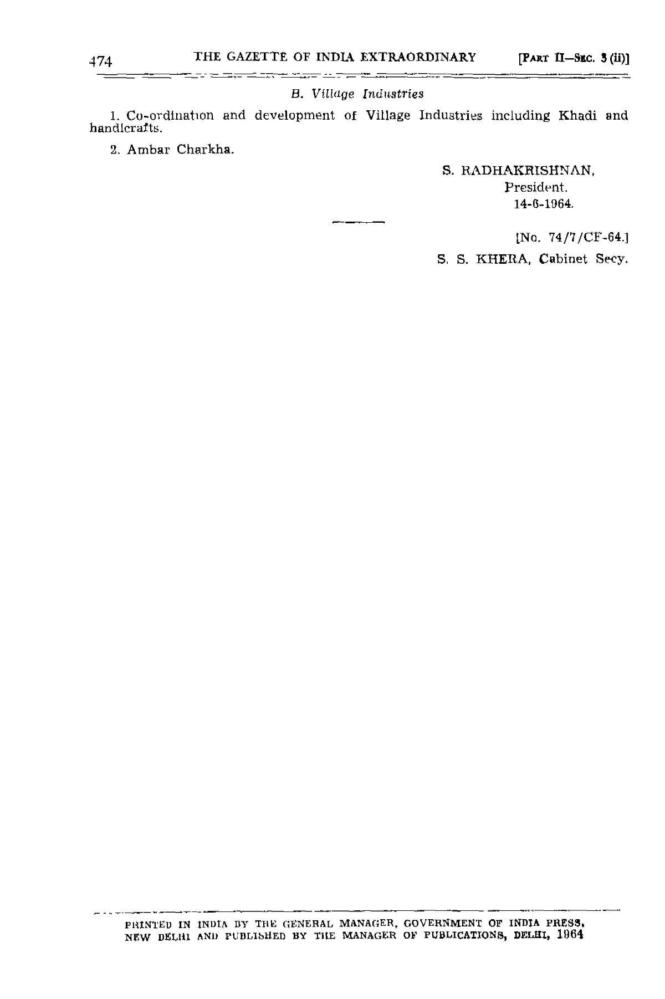

Amendment #30 (S.O. 2180, 1964)
13 changes: 1 to the First Schedule, 12 to the Second Schedule. 13 applied
What it did to the ministries
- endedDepartment of Technical Development is abolished · histories: Technical Development
- spun offMinistry of Civil Aviation is separated from Ministry of Transport (9 subjects) change 2, 10 · histories: Transport, Civil Aviation
- spun offDepartment of Social Security is separated from Ministry of Education (6 subjects) change 3, 11 · histories: Education and Youth Services, Social Welfare
- spun offDepartment of Social Security is separated from Ministry of Home Affairs (5 subjects) change 5, 11 · histories: Home Affairs, Social Welfare
- absorbedDepartment of Supply joins Ministry of Industry and Supply (29 → 34) change 4, 6 · histories: Supply, Industry
- renamedMinistry of International Trade is renamed Ministry of Commerce change 2, 6 · histories: Foreign Trade
- renamedMinistry of Industry is renamed Ministry of Industry and Supply change 4, 6 · histories: Industry
- renamedMinistry of Steel, Mines & Heavy Engineering is renamed Ministry of Steel and Mines change 9 · histories: Steel and Mines
- shrankMinistry of Steel and Mines shrinks from 26 to 20 subjects change 9 · histories: Steel and Mines
The order, page by page
Page 1 of 8

12345678Schedule 1
- THE FIRST SCHEDULE (Rule 2) Ministries, Departments, Secretariats and Offices
- 1. Ministry of Civil Aviation.
- 2. Ministry of Commerce.
- 3. Ministry of Community Development and Cooperation
- i. Department of Community Development.
- ii. Department of Cooperation.
and 43 more
- 4. Ministry of Defence
- -. Department of Defence Production
- 5. Ministry of Education.
- 6. Ministry of External Affairs.
- 7. Ministry of Finance:
- i. Department of Economic Affairs.
- ii. Department of Expenditure.
- iii. Department of Revenue and Company Law.
- iv. Department of Co-ordination.
- 6. Ministry of Food and Agriculture: (1) Department of Agriculture.
- ii. Department of Food.
- 9. Ministry of Health.
- 10. Ministry of Home Affairs
- -. Department of Administrative Reforms
- 11. Ministry of Industry and Supply:
- i. Department of Heavy Engineering.
- ii. Department of Industry.
- iii. Department of Supply and Technical Development.
- 12. Ministry of Information and Broadcasting.
- 13. Ministry of Irrigation and Power.
- 14. Ministry of Labour and Employment.
- 15. Ministry of Law:
- i. Department of Legal Affairs.
- ii. Legislative Department.
- 16. Ministry of Petroleum and Chemicals:
- i. Department of Petroleum.
- ii. Department of Chemicals. SFC. 3(ii)]
- 17. Ministry of Railways (Railway Board)
- 18. Ministry of Rehabilitation.
- 19. Ministry of Steel and Mines: (1) Department of Iron and Steel
- ii. Department of Mines and Metals
- 20. Ministry of Transport.
- 21. Ministry of Works and Housing.
- 22. Department of Atomic Energy.
- 23. Department of Parliamentary Affairs.
- 24. Department of Communications.
- 25. Department of Social Security.
- 26. Cabinet Secretariat:
- i. Department of Cabinet Affairs.
- ii. Department of Statistics.
- 27. Presidents Secretariat.
- 28. Prime Minister's Secretariat.
- 29. Planning Commission.
applied at schedule 1 in the Rules after #30
read hindi missing, read page break
before Schedule 2 › Ministry of Community Development and Co- operation
- MINISTRY OF CIVIL AVIATION
- 1. Meteorological Organisation.
- 2. Aircraft and air navigation; provision of aerodromes; regulation and organisation of air traffic and of aerodromes (excepting sanitary control of air navigation).
- 3. Beacons and other provisions for the safety of aircraft.
- 4. Carriage of passenger and goods by air.
- 5. Corporation established under the Air Corporations Act, 1953.
and 73 more
- 6. Railway Inspectorate.
- 7. Offences against laws with respect to any of the matters specified in this list.
- 8. Inquiries and statistics for the purpose of any of the matters specified in this list.
- 9. Fees in respect of any of the matters specifled in this list but not including fees taken in any court.
- 10. Implementation of Treaties and Agreements relating to any of the matters specified in this list.
- MINISTRY OF COMMERCE
- I. Trade
- 1. Foreign Trade.
- 2. State Trading.
- 3. Protection of interests of Indian traders abroad.
- 4. Trade Missions and Delegations.
- 5. Internal Trade.
- 6. Inter-State Trade; the Spirituous Preparation (Inter-State Trade and Commerce) Control Act, 1955.
- 7. International Commodity Agreement other than wheat.
- 8. International Trade Agreements.
- 9. Import Trade Control.
- 10. Export Trade Control.
- 11. Control prices of export goods.
- 12. Control of Futures Trading [The Forward Contracts (Regulation) Act, 1952].
- 13. Trade Promotion, Publicity and Research.
- 14. ECAFE and its Committee on Industry and Trade.
- 15. Essential Commodities Act (Supply, prices and distribution of essential commodities not dealt with specifically by any other Ministry).
- 16. Export Credit Guarantec.
- 17. Fairs and Exhibitions abroad and in India; Government Showrooms and Trade Centres abroad.
- 18. European Common Market.
- II. Commercial Intelligence, Statistics and Publications
- 19. Commercial Intelligence and Statistics.
- 20. Commercial Publications including periodicals.
- III. Trade Marks, etc.
- 21. The Trade and Merchandise Marks Act, 1958.
- 22. Standards of Weights and Measures
- IV. Enemy Property
- 23. Reparations (other than German Industrial Equipment)
- 24. Control of trade with the enemy and enemy firms and custody of enemy property.
- V. Plantation Industries
- 25. Tea (The Tea Act, 1953); International Tea Regulation Scheme, Export Cess on Tea.
- 26. Rubber (The Rubber Act, 1947).
- 27. Coffee (The Coffee Act, 1942).
- VI. Coir Industry.
- 28. Co-ordination of the development of the Coir Industry; the Coir Industry Act, 1953.
- VII. Textiles, Jute and Sericulture
- 29. Textiles.
- 30. Handloom Industry.
- 31. Jute.
- 32. Sericulture.
- VIII. Tariffs and Customs
- 33. General Agreement on Tariffs and Trade.
- 34. Tariff Policy (The Indian Tariff Act, 1934).
- 35. Tariff Commission (The Tariff Commission Act, 1951).
- 36. Tariff Valuation.
- 37. Tariff Protection to Industries.
- 38. International Customs Tariff Bureau.
- 39. Commonwealth Tariff Preferences.
- 40. Customs nomenclature and similar matters
- IX. Other subjects
- 41. All Attached or Subordinate Offices or other organisations concerned with any of the subject specified in this list, including:
- i. Chief Controller of Imports and Exports, New Delhi
- ii. Forward Markets Commission, Bombay.
- iii. Tariff Commission, Bombay.
- iv. Textile Commissioner, Bombay. Shc. $(ii)]
- v. Jute Commissioner, Calcutta.
- vi. Director General of Commercial Intelligence and Statistics, Calcutta.
- vii. Controller of Enemy Trading and Enemy Firms and Custodian of Enemy Property. (viii) Cotton Textiles Fund Committee, Bombay.
- ix. Rubber Board, Kottayam.
- x. Tea Board, Calcutta.
- xi. Coffee Board, Bangalore.
- xii. Coir Board, Ernakulam. (xiii) All-India Handloom Board.
- xiv. Indian Trade Representatives abroad.
- 42. State Undertakings and Government Corporations falling under the subjects specified in this list, including:
- i. State Trading Corporation Ltd.
- ii. Export Credit and Guarantee Corporation Ltd.
- iii. Minerals and Metals Trading Corporation Ltd.
- iv. Indian Motion Picture Export Corporation Ltd.
applied at schedule 2 › ministry MINISTRY OF CIVIL AVIATION in the Rules after #30
read hindi missing, read page break
Schedule 2 › Ministry of Education › entry 7; Schedule 2 › Ministry of Education › entry 8; Schedule 2 › Ministry of Education › entry 10; Schedule 2 › Ministry of Education › entry 11; Schedule 2 › Ministry of Education › entry 12; Schedule 2 › Ministry of Education › entry 16
applied at schedule 2 › ministry MINISTRY OF EDUCATION › ministry MINISTRY OF EDUCATION › entry 7 in the Rules after #30
Schedule 2 › Ministry of Health › entry 7; Schedule 2 › Ministry of Health › entry 57
applied at schedule 2 › ministry MINISTRY OF HEALTH › group_heading I › entry 7 in the Rules after #30
Schedule 2 › Ministry of Home Affairs › entry 19; Schedule 2 › Ministry of Home Affairs › entry 20; Schedule 2 › Ministry of Home Affairs › entry 21; Schedule 2 › Ministry of Home Affairs › entry 22; Schedule 2 › Ministry of Home Affairs › entry 94; Schedule 2 › Ministry of Home Affairs › entry 95
applied at schedule 2 › ministry MINISTRY OF HOME AFFAIRS › part I › group_heading The following subjects which are relatable to… in the Rules after #30
Schedule 2 › Ministry of Industry
- MINISTRY OF INDUSTRY & SUPPLY
- A. Department of Heavy Engineering.
- 1. Manufacture of heavy engineering equipment for all industries.
- 2. Heavy electrical engineering industries.
- 3. Machinery Industries including Machine Tools and Steel manufactures.
- 4. Auto Industries, including tructors, earth moving equipment and diesel engines.
and 44 more
- 5. Planning development and control of, and assistance to, all industries dealt with by the Department
- 6. All Attached or Subordinate Offices or other organisations concerned with any of the subjects specified in this list.
- 7. Public sector projects falling under the subjects included in this list except such projects as are specifically allotted to any other Department.
- B. Department of Industry
- I. Industrial Policy
- 1. General Industrial Policy.
- 2. The Administration of the Industries (Development & Regulation) Act, 1961.
- 3. Industrial Management.
- 4. Productivity in Industry.
- II. Industrial Cooperation
- 5. Cooperation in the industrial sector, excepting Cooperative Sugar Factories.
- III. Industries and Industrial Development
- 6. Planning, development and control of, and assistance to, all industries other than those dealt with by any other Department.
- 7. Cables.
- 8. Light Engineering Industries (e.g., Sewing Machines, typewriters, weighing machines, bicycles, etc.).
- 9. Optical Glass Project.
- 10. Light Industries (e.g., Plywood, stationery, matches, cigarettes, etc.).
- 11. Light Electrical Engineering Industries.
- 12. Raw films.
- 13. Hard Board.
- 14. Paper and newsprint. THE GAZETIE OF INDIA EXTRAORDINARY
- 15. Tyres and Tubes.
- 16. Salt.
- 17. Cement.
- IV. Small Scale Industries
- 18. Co-ordination of the development of small-scale Industries : (1) Small Scale Industries Board.
- i. National Small Industries Corporation.
- iii. Setting up of new industries in displaced persons townships and colonies and places where there are heavy concentrations of displaced persons for mitigating their unemployment in the Western Region, viz. Punjab, Uttar Pradesh, Maharashtra, Gujarat, Rajasthan, Madhya Pradesh and the Union territory…
- V. Patents and Designs, etc
- 19. Standardisation of international products and raw materials; the Indian Standards Institution (Certification Marks) Act, 1952.
- 20. Palents & Designs (The Indian Patents and Designs Act, 1911).
- VI. Other subjects.
- 21. All Attached or Subordinate Offices or other organisations concerned with any of the subjects specified in this list.
- 22. Public sector projects falling under the subjects included in this list except such projects as are specifically allotted to any other Department.
- C. Department of Supply & Technical Development
- 1. Purchase, inspection and shipment of stores for the Central Government other than the Items the purchase, inspection and shipment of which are delegated to other authorities by a general or special order.
- 2. Disposal of surplus stores.
- 3. Residual work of supply and disposal relating to the late war organisations including the Directorate General, Aircraft, including Civil Maintenance Units and Directorate General, Ship Repairs.
- 4. Administration of:
- a. Directorate General of Supplies and Disposals
- b. Government Test House, Alipore, Calcutta
- e. India Store Department, the United Kingdom
- d. India Supply Mission, the U.S.A.
- 5. Technical Development, including Directorate General of Technical Development.
applied at schedule 2 › ministry MINISTRY OF INDUSTRY in the Rules after #30
read hindi missing, read page break
Schedule 2 › Ministry of International Trade
applied at schedule 2 › ministry in the Rules after #30
Schedule 2 › Ministry of Labour & Employment › entry 6; Schedule 2 › Ministry of Labour & Employment › entry 26
applied at schedule 2 › ministry MINISTRY OF LABOUR AND EMPLOYMENT. › part II › entry 6 in the Rules after #30
Page 2 of 8

910111213Schedule 2 › Ministry of Steel, Mines and Heavy Engineering
- MINISTRY OF STEEL & MINES
- A. Department of Iron and Steel
- 1. Steel plants in the public and private sectors, the rerolling industry and ferro-alloys including all future development.
- 2. Development of ore mines, coal washeries etc., for steel plants.
- 3. Production, distribution, prices, imports and exports of iron and steel and ferro-alloys
- 4. Planning, development and control of, and assistance to, all iron and steel Industries.
and 17 more
- 5. All Attached or Subordinate Offices or other organisations concerned with any of the subjects specified in this list.
- 6. Public sector projects falling under the subjects included in this list except such projects as are specifically allotted to any other Department. SEC. 3(ii)]
- B. Department of Mines and Metals
- 1. Production, supply, distribution and prices of coal and coke
- 2. Exploration of Lignite deposits in India.
- 3. Setting up of synthetic oil plant based on coal and low temperature carbonisation plants for the production of smokeless domestic coal.
- 4. Administration of the Coal Mines (Conservation and Safety) Act, 1952.
- 5. Administration of the Coal Grading Board Act, 1955.
- 6. Administration of Coal Bearing Areas (Acquisition and Development) Act.
- 1957.
- 7. Regulation of mines and minerals development under the Mines and Minerals (Regulation and Development) Act, 1957 and other Union laws including questions concerning various States and incidental business in respect of these.
- 8. All metals (other than those dealt with in the Department of Iron & Steel) such as Aluminium, Zinc, Copper and all minerals not covered by entries 1 to 7 above.
- 9. Planning. development and control of, and assistance to, all industries dealt with by the Department
- 10. Geological Survey of India.
- 11. Indian Bureau of Mines.
- 12. All other attached or Subordinate Offices or other organisations concerned with any of the subjects specified in this list.
- 13. Public sector projects falling under the subjects included in this list except such projects as are specifically allotted to any other Department.
applied at schedule 2 › ministry MINISTRY OF STEEL, MINES AND HEAVY ENGINEERING in the Rules after #30
read hindi missing, read page break
Schedule 2 › Ministry of Transport › entry
applied at schedule 2 › ministry MINISTRY OF TRANSPORT › group_heading III › entry 25 in the Rules after #30
after Schedule 2 › Department of Communications
- DEPARTMENT OF SOCIAL SECURITY
- A. Social Security
- 1. Child Welfare and Co-ordination of activities of other Ministries and Organisations in connection with this subject.
- 2. Juvenile delinquency. Bal Bhavan; Children's Museum.
- 3. Orphans and Orphanages.
- 4. Beggary. Juvenile vagrancy and other 'care' programmes.
and 18 more
- 5. United Nations International Children's Emergency Fund (UNICEF).
- 6. U.N. Rehabilitation Centre for Crippled Children. Bombay.
- 7. Education of the handicapped.
- 8. Social and Moral Hygiene Programmes so far as they relate to women in moral danger, that is to say, Rescue Homes and Reception Centres. Including after-care programmes, the administration of the Suppression of Immoral Traffic in Women and Girls Act, 1956 and the establishment and maintenance of…
- 9. Social Welfare.
- 10. Scheduled Castes. Scheduled Tribes, ex-criminal Tribes and other Backward Classes.
- 11.
- i. Appointment, resignation etc. of Special Officer for Scheduled Castes and Scheduled Tribes etc; and
- ii. Reports of the Special Officer.
- 12.
- i. Commission to report on the administration of Scheduled Areas and the welfare of Scheduled Tribes; and
- i. Issue of directions regarding the drawing up and execution of schemes essential for the welfare of the Scheduled Tribes in the State.
- 13. Reports of the Commission to Investigate Into conditions of Backward Classes.
- 14. Unemployment insurance.
- 15. Social security measures, including the administration of the Employees State Insurance Act. the Employees' Provident Funds Acf. the Minimum Wugos Act; and Coal Mines Provident Fund Act.
- B. Village Industries
- 1. Co-ordination and development of Village Industries including Khadi and handicrafts.
- 2. Ambar Charkha.
applied at schedule 2 › department DEPARTMENT OF SOCIAL SECURITY in the Rules after #30
read hindi missing, read page break
Schedule 2 › Department of Supply
applied at schedule 2 › department in the Rules after #30
Schedule 2 › Department of Technical Development
applied at schedule 2 › department in the Rules after #30
Page 3 of 8

Page 4 of 8

Page 5 of 8

Page 6 of 8

Page 7 of 8

Page 8 of 8

How this document was read
Edits to the reading
| Date | By | Edit | Before → after |
|---|---|---|---|
| 14 November 2026 | mukundesh | word corrected | |
| 21 November 2026 | claude | word corrected |
From the Government of India (Allocation of Business) Rules, 1961 and their amendments, as published by the Cabinet Secretariat (cabsec.gov.in), read by orgpedia. The readings of the older scanned gazettes have known gaps.